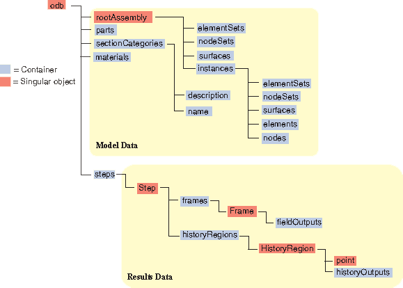
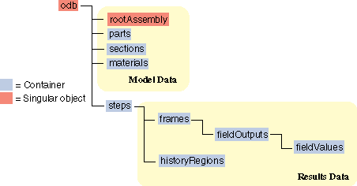

Object model for the output database#
An output database generated from an Abaqus analysis contains both model and results data.
Model data Model data describe the parts and part instances that make up the root assembly; for example, nodal coordinates, set definitions, and element types.
Results data
Results data describe the results of your analysis; for example, stresses, strains, and displacements. You use output requests to configure the contents of the results data. Results data can be either field output data or history output data.
Note
For a description of object models, see user/python/use-scripts/object-model.
You can find more information on the format of the output database in Output to the Output Database.
Model data#
Model data define the model used in the analysis; for example, the parts, materials, initial and boundary conditions, and physical constants. More information about model data can be found in The user/python/use-scripts/object-model and Assembly definition.
Abaqus does not write all the model data to the output database; for example, you cannot access loads, and only certain interactions are available. Model data that are stored in the output database include parts, the root assembly, part instances, regions, materials, sections, section assignments, and section categories, each of which is stored as an Abaqus Scripting Interface object. These components of model data are described below.
Parts
A part in the output database is a finite element idealization of an object. Parts are the building blocks of an assembly and can be either rigid or deformable. Parts are reusable; they can be instanced multiple times in the assembly. Parts are not analyzed directly; a part is like a blueprint for its instances. A part is stored in an output database as a collection of nodes, elements, surfaces, and sets.
The root assembly
The root assembly is a collection of positioned part instances. An analysis is conducted by defining boundary conditions, constraints, interactions, and a loading history for the root assembly. The output database object model contains only one root assembly.
Part instances
A part instance is a usage of a part within the assembly. All characteristics (such as mesh and section definitions) defined for a part become characteristics for each instance of that part—they are inherited by the part instances. Each part instance is positioned independently within the root assembly.
Materials
Materials contain material models comprised of one or more material property definitions. The same material models may be used repeatedly within a model; each component that uses the same material model shares identical material properties. Many materials may exist within a model database, but only the materials that are used in the assembly are copied to the output database.
Sections
Sections add the properties that are necessary to define completely the geometric and material properties of an element. Various element types require different section types to complete their definitions. For example, shell elements in a composite part require a section that provides a thickness, multiple material models, and an orientation for each material model; all these pieces combine to complete the composite shell element definition. Like materials, only those sections that are used in the assembly are copied to the output database.
Section assignments
Section assignments link section definitions to the regions of part instances. Section assignments in the output database maintain this association. Sections are assigned to each part in a model, and the section assignments are propagated to each instance of that part.
Section categories
You use section categories to group the regions of the model that use the same section definitions; for example, the regions that use a shell section with five section points. Within a section category, you use the section points to identify the location of results; for example, you can associate section point 1 with the top surface of a shell and section point 5 with the bottom surface.
Analytical rigid surface
Analytical rigid surfaces are geometric surfaces with profiles that can be described with straight and curved line segments. Using analytical rigid surfaces offers important advantages in contact modeling.
Rigid bodies
You use rigid bodies to define a collection of nodes, elements, and/or surfaces whose motion is governed by the motion of a single node, called the rigid body reference node.
Pretension Sections
Pretension sections are used to associate a pre-tension node with a pre-tension section. The pre-tension section can be defined using a surface for continuum elements or using an element for truss or beam elements.
Interactions
Interactions are used to define contact between surfaces in an analysis. Only contact interactions defined using contact pairs are written to the output database.
Interaction properties
Interaction properties define the physical behavior of surfaces involved in an interaction. Only tangential friction behavior is written to the output database.
Fig. 22 shows the model data object model.
{kind=link}

Fig. 22 The model data object model.#
The objects stored as model data in an output database are similar to the objects stored in an Abaqus/CAE model database. However, the output database does not require a model name because an analysis job always refers to a single model and the resulting output database can contain only one model. For example, the following Abaqus Scripting Interface statements refer to an Instance object in the model database:
mdb = openMdb(pathName='/users/smith/mdb/hybridVehicle')
myModel = mdb.models['Transmission']
myPart = myModel.rootAssembly.instances['housing']
Similar statements refer to an Instance object in the output database.
odb = openOdb(path='/users/smith/odb/transmission.odb')
myPart = odb.rootAssembly.instances['housing']
You can use the prettyPrint method to display a text representation of an output database and to view the structure of the model data in the object model. For example, the following shows the output from prettyPrint applied to the output database created by the Abaqus/CAE cantilever beam tutorial:
from odbAccess import *
from textRepr import *
odb=openOdb('Deform.odb')
prettyPrint(odb,2)
({'analysisTitle': 'Cantilever beam tutorial',
'closed': False,
'description': 'DDB object',
'diagnosticData': ({'analysisErrors': 'OdbSequenceAnalysisError object',
'analysisWarnings': 'OdbSequenceAnalysisWarning object',
'jobStatus': JOB_STATUS_COMPLETED_SUCCESSFULLY,
'jobTime': 'OdbJobTime object',
'numberOfAnalysisErrors': 0,
'numberOfAnalysisWarnings': 0,
'numberOfSteps': 1,
'numericalProblemSummary': 'OdbNumericalProblemSummary object',
'steps': 'OdbSequenceDiagnosticStep object'}),
'isReadOnly': False,
'jobData': ({'analysisCode': ABAQUS_STANDARD,
'creationTime': 'date time year',
'machineName': '',
'modificationTime': 'date time year',
'name': 'Deform.odb',
'precision': SINGLE_PRECISION,
'productAddOns': 'tuple object',
'version': 'Abaqus/Standard release'}),
'name': 'Deform.odb',
'parts': {'BEAM': 'Part object'},
'path': 'C:/Deform.odb',
'rootAssembly': ({'connectorOrientations': 'ConnectorOrientationArray object',
'datumCsyses': 'Repository object',
'elementSet': 'Repository object',
'elementSets': 'Repository object',
'elements': 'OdbMeshElementArray object',
'instance': 'Repository object',
'instances': 'Repository object',
'name': 'ASSEMBLY',
'nodeSet': 'Repository object',
'nodeSets': 'Repository object',
'nodes': 'OdbMeshNodeArray object',
'sectionAssignments': 'Sequence object',
'surface': 'Repository object',
'surfaces': 'Repository object'}),
'sectionCategories': {'solid < STEEL >': 'SectionCategory object'},
'sectorDefinition': None,
'steps': {'Beamload': 'OdbStep object'},
'userData': ({'annotations': 'Repository object',
'xyData': 'Repository object',
'xyDataObjects': 'Repository object'})})
For more information, see prettyprint().
Results data#
Results data describe the results of your analysis. Abaqus organizes the analysis results in an output database into the following components:
Steps
An Abaqus analysis contains a sequence of one or more analysis steps. Each step is associated with an analysis procedure.
Frames
Each step contains a sequence of frames, where each increment of the analysis that resulted in output to the output database is called a frame. In a frequency or buckling analysis each eigenmode is stored as a separate frame. Similarly, in a steady-state harmonic response analysis each frequency is stored as a separate frame.
Field output
Field output is intended for infrequent requests for a large portion of the model and can be used to generate contour plots, animations, symbol plots, and displaced shape plots in the Visualization module of Abaqus/CAE. You can also use field output to generate an X - Y data plot. Only complete sets of basic variables (for example, all the stress or strain components) can be requested as field output. Field output is composed of a cloud of data values (e.g., stress tensors at each integration point for all elements). Each data value has a location, type, and value. You use the regions defined in the model data, such as an element set, to access subsets of the field output data. Fig. 23 shows the field output data object model within an output database.

Fig. 23 The field output data object model.#
History output
History output is output defined for a single point or for values calculated for a portion of the model as a whole, such as energy. History output is intended for relatively frequent output requests for small portions of the model and can be displayed in the form of X - Y data plots in the Visualization module of Abaqus/CAE. Individual variables (such as a particular stress component) can be requested.
Depending on the type of output expected, a HistoryRegion object can be defined for one of the following:
a node
an integration point
a region
the whole model
The output from all history requests that relate to a particular point or region is then collected in one HistoryRegion object. Fig. 25 shows the history output data object model within an output database.

Fig. 24 The history output data.#
{kind=link}